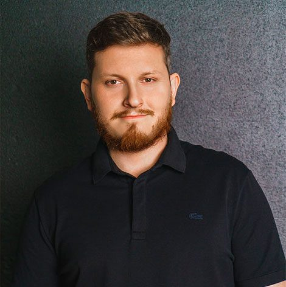
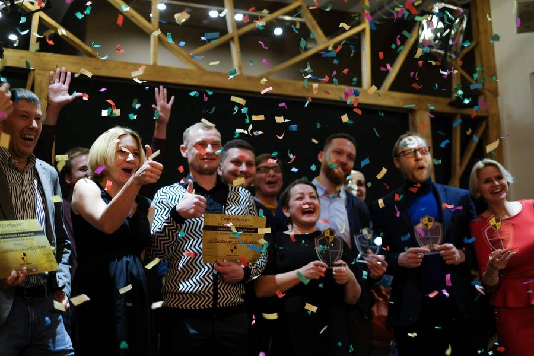

Бизнес, который растёт кратно. Семья, которая строится на 144 года.
Трекинг — регулярная работа с собственником и командой: находим узкое место, проверяем гипотезы короткими циклами, закрепляем рост. Этому методу мы учим предпринимателей, руководителей и будущих трекеров.

«Помогаю сильным стать великими, а великим — добродетельными»
Александр Бакеев, мастер-трекер, основатель Right TrackЧетыре входа. Один метод.
Выберите свою ситуацию. Покажем, с чего начать и что будет дальше.
Бизнес растёт, но упёрся в потолок
Работаете за четверых, а выручка стоит. Найдём ограничение и снимем его.
Строю семью, которая переживёт бизнес
Стратегия на пять поколений: капиталы, роли, ритуалы, воспитание детей.
Стратегия принята, но не исполняется
Топы тонут в операционке. Стратегическая сессия и трекинг команды до результата.
Хочу вести клиентов как трекер
Профессия на стыке консалтинга и коучинга. Четыре уровня мастерства и сертификация.
Где ваше узкое место?
Система движется со скоростью самого узкого звена. Десять вопросов покажут, какое звено ограничивает вас сейчас.
- Профиль бизнеса по пяти зонам
- Главное ограничение и шаг на эту неделю
- Программа, которая подходит именно вам
Ближайшие потоки и места
Если дата ещё не объявлена, займите место в листе ожидания: вы узнаете о наборе раньше общего анонса.
После программы меняется картина мира
Основатель и команда работали с компаниями уровня Сбера, МТС, Яндекса, «Лаборатории Касперского», Toyota и Microsoft.
Единственный тренинг в жизни, который кроме пользы оформил мне пинок под зад в виде полной перемены картины мира.
Есть понимание, с какой скоростью расти год к году. Есть перечень, что делать и о чём думать, чтобы осуществить цели. Появилось более чёткое видение желаемого будущего в горизонте 10 лет.


Александр Бакеев
Мастер-трекер, основатель Right Track и учредитель премии «Трекер года». Преподаёт в МГИМО и РАНХиГС. Ранее трекер ФРИИ и советник «Рыбаков Фонда». Приглашённый лектор в Сбере, МТС, «Росатоме».
Спросите Александра
Двойник отвечает по материалам Александра: канал, подкаст, программы. И всегда показывает источник. Выберите вопрос.
Дальше: свободный вопрос, голос и память о целях.
Методичка «Инструменты кратного роста»
Короткий набор инструментов трекинга с видеоразбором Александра Бакеева. Пришлём туда, где вам удобно читать.